gptools Package¶
gptools Package¶
gptools - Gaussian process regression with support for arbitrary derivatives
error_handling Module¶
Contains exceptions specific to the gptools package.
gaussian_process Module¶
Provides the base GaussianProcess class.
- class gptools.gaussian_process.GaussianProcess(k, noise_k=None, X=None, y=None, err_y=0)[source]¶
Bases: object
Gaussian process.
If called with one argument, an untrained Gaussian process is constructed and training data must be added with the add_data() method. If called with the optional keywords, the values given are used as the training data. It is always possible to add additional training data with add_data().
Note that the attributes have no write protection, but you should always add data with add_data() to ensure internal consistency.
Parameters : k : Kernel instance
Kernel instance corresponding to the desired noise-free covariance kernel of the Gaussian process. The noise is handled separately either through specification of err_y, or in a separate kernel. This allows noise-free predictions when needed.
noise_k : Kernel instance
Kernel instance corresponding to the noise portion of the desired covariance kernel of the Gaussian process. Note that you DO NOT need to specify this if the extent of the noise you want to represent is contained in err_y (or if your data are noiseless). Default value is None, which results in the ZeroKernel (noise specified elsewhere or not present).
NOTE :
The following are all passed to add_data(), refer to its docstring.
X : Matrix or other Array-like, (M, N), optional
M training input values of dimension N. Default value is None (no training data).
y : Array or other Array-like, (M,), optional
M training target values. Default value is None (no training data).
err_y : Array or other Array-like, (M,), optional
Error (given as standard deviation) in the M training target values. Default value is 0 (noiseless observations).
Raises : GPArgumentError :
Gave X but not y (or vice versa).
ValueError :
Training data rejected by add_data().
See also
- add_data
- Used to process X, y, err_y and to add data to the process.
Attributes
k Kernel instance The non-noise portion of the covariance kernel. noise_k Kernel instance The noise portion of the covariance kernel. X Matrix, (M, N) The M training input values, each of which is of dimension N. y Array, (M,) The M training target values. err_y Array, (M,) The error in the M training input values. n Matrix, (M, N) The orders of derivatives that each of the M training points represent, indicating the order of derivative with respect to each of the N dimensions. K_up_to_date bool True if no data have been added since the last time the internal state was updated with a call to compute_K_L_alpha_ll(). K Matrix, (M, M) Covariance matrix between all of the training inputs. noise_K Matrix, (M, M) Noise portion of the covariance matrix between all of the training inputs. Only includes the noise from noise_k, not from err_y. L Matrix, (M, M) Cholesky decomposition of the combined covariance matrix between all of the training inputs. alpha Matrix, (M, 1) Solution to 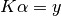. ll float Log-likelihood of the data given the model. - num_dim[source]¶
The number of dimensions of the input data.
Returns : num_dim: int :
The number of dimensions of the input data as defined in the kernel.
- add_data(X, y, err_y=0, n=0)[source]¶
Add data to the training data set of the GaussianProcess instance.
Parameters : X : Matrix or other Array-like, (M, N)
M training input values of dimension N.
y : Array or other Array-like, (M,)
M training target values.
err_y : Array or other Array-like (M,) or scalar float, optional
Non-negative values only. Error given as standard deviation) in the M training target values. If err_y is a scalar, the data set is taken to be homoscedastic (constant error). Otherwise, the length of err_y must equal the length of y. Default value is 0 (noiseless observations).
n : Matrix or other Array-like (M, N) or scalar float, optional
Non-negative integer values only. Degree of derivative for each training target. If n is a scalar it is taken to be the value for all points in y. Otherwise, the length of n must equal the length of y. Default value is 0 (observation of target value). If non-integer values are passed, they will be silently rounded.
Raises : ValueError :
Bad shapes for any of the inputs, negative values for err_y or n.
- compute_Kij(Xi, Xj, ni, nj, noise=False, hyper_deriv=None)[source]¶
Compute covariance matrix between datasets Xi and Xj.
Specify the orders of derivatives at each location with the ni, nj arrays. The include_noise flag is passed to the covariance kernel to indicate whether noise is to be included (i.e., for evaluation of 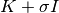 versus 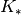).
If Xj is None, the symmetric matrix 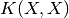 is formed.
Note that type and dimension checking is NOT performed, as it is assumed the data are from inside the instance and have hence been sanitized by add_data().
Parameters : Xi : Matrix, (M, N)
M input values of dimension N.
Xj : Matrix, (P, N)
P input values of dimension N.
ni : Array, (M,), non-negative integers
M derivative orders with respect to the Xi coordinates.
nj : Array, (P,), non-negative integers
P derivative orders with respect to the Xj coordinates.
noise : bool, optional
If True, uses the noise kernel, otherwise uses the regular kernel. Default is False (use regular kernel).
hyper_deriv : None or non-negative int
Index of the hyperparameter to compute the first derivative with respect to. If None, no derivatives are taken. Default is None (no hyperparameter derivatives).
Returns : Kij : Matrix, (M, P)
Covariance matrix between Xi and Xj.
- compute_K_L_alpha_ll(diag_factor=100.0)[source]¶
Compute K, L, alpha and log-likelihood according to the first part of Algorithm 2.1 in R&W.
Computes K and the noise portion of K using compute_Kij(), computes L using scipy.linalg.cholesky(), then computes alpha as L.T\(L\y).
Only does the computation if K_up_to_date is False – otherwise leaves the existing values.
Parameters : diag_factor : float, optional
Factor of sys.float_info.epsilon which is added to the diagonal of the total K matrix to improve the stability of the Cholesky decomposition. If you are having issues, try increasing this by a factor of 10 at a time. Default is 1e2.
- update_hyperparameters(new_params, return_jacobian=False)[source]¶
Update the kernel’s hyperparameters to the new parameters.
This will call compute_K_L_alpha_ll() to update the state accordingly.
Parameters : new_params : Array or other Array-like, length dictated by kernel
New parameters to use.
return_jacobian : bool, optional
If True, the return is (ll, jac). Otherwise, return is ll only and the execution is faster. Default is False (do not compute Jacobian).
Returns : -1*ll : float
The updated log likelihood.
-1*jac : Array, length equal to the number of parameters
The derivative of ll with respect to each of the parameters, in order. Only computed and returned if return_jacobian is True.
- optimize_hyperparameters(method='SLSQP', opt_kwargs={}, verbose=False)[source]¶
Optimize the hyperparameters by maximizing the log likelihood.
Leaves the GaussianProcess instance in the optimized state.
If scipy.optimize.minimize() is not available (i.e., if your scipy version is older than 0.11.0) then fmin_slsqp() is used independent of what you set for the method keyword.
Parameters : method : str, optional
The method to pass to scipy.optimize.minimize(). Refer to that function’s docstring for valid options. Default is ‘SLSQP’. See note above about behavior with older versions of scipy.
opt_kwargs : dict, optional
Dictionary of extra keywords to pass to scipy.optimize.minimize(). Refer to that function’s docstring for valid options. Note that if you use jac = True (i.e., optimization function returns Jacobian) you should also set args = (True,) to tell update_hyperparameters() to compute and return the Jacobian. Default is: {}.
verbose : bool, optional
Whether or not the output should be verbose. If True, the entire Result object from scipy.optimize.minimize() is printed. If False, status information is only printed if the success flag from minimize() is False. Default is False.
- predict(Xstar, n=0, noise=False, return_cov=True)[source]¶
Predict the mean and covariance at the inputs Xstar.
The order of the derivative is given by n. The keyword noise sets whether or not noise is included in the prediction.
Parameters : Xstar : Array or other Array-like, (M, N)
M test input values of dimension N.
n : Matrix or other Array-like, (M, N) or scalar, non-negative int, optional
Order of derivative to predict (0 is the base quantity). If n is scalar, the value is used for all points in Xstar. If non-integer values are passed, they will be silently rounded. Default is 0 (return base quantity).
noise : bool, optional
Whether or not noise should be included in the covariance. Default is False (no noise in covariance).
return_cov : bool, optional
Set to True to compute and return the covariance matrix for the predictions, False to skip this step. Default is True (return tuple of (mean, cov)).
Returns : mean : Array, (M,)
Predicted GP mean.
covariance : Matrix, (M, M)
Predicted covariance matrix, only returned if return_cov is True.
Raises : ValueError :
If n is not consistent with the shape of Xstar or is not entirely composed of non-negative integers.
- compute_ll_matrix(bounds, num_pts)[source]¶
Compute the log likelihood over the (free) parameter space.
Parameters : bounds : 2-tuple or list of 2-tuples with length equal to the number of free parameters
Bounds on the range to use for each of the parameters. If a single 2-tuple is given, it will be used for each of the parameters.
num_pts : int or list of ints with length equal to the number of free parameters
If a single int is given, it will be used for each of the parameters.
Returns : ll_vals : Array
The log likelihood for each of the parameter possibilities.
- param_vals : List of Array
The parameter values used.
- draw_sample(Xstar, n=0, noise=False, num_samp=1, rand_vars=None, rand_type='standard normal', diag_factor=1000.0)[source]¶
Draw a sample evaluated at the given points Xstar.
Parameters : Xstar : Matrix or other Array-like, (M, N)
M test input values of dimension N.
n : Matrix or other Array-like, (M, N) or scalar, non-negative int, optional
Derivative order to evaluate at. Default is 0 (evaluate value).
noise : bool, optional
Whether or not to include the noise components of the kernel in the sample. Default is False (no noise in samples).
num_samp : Positive int, optional
Number of samples to draw. Default is 1. Cannot be used in conjunction with rand_vars: If you pass both num_samp and rand_vars, num_samp will be silently ignored.
rand_vars : Matrix or other Array-like (M, P), optional
Vector of random variables
 to use in constructing the
sample 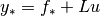, where 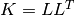. If None,
values will be produced using numpy.random.multivariate_normal().
This allows you to use pseudo/quasi random numbers generated by
an external routine. Default is None (use multivariate_normal()
directly).
to use in constructing the
sample 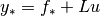, where 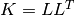. If None,
values will be produced using numpy.random.multivariate_normal().
This allows you to use pseudo/quasi random numbers generated by
an external routine. Default is None (use multivariate_normal()
directly).rand_type : {‘standard normal’, ‘uniform’}, optional
Type of distribution the inputs are given with.
- ‘standard normal’: Standard (mu = 0, sigma = 1) normal distribution (this is the default)
- ‘uniform’: Uniform distribution on [0, 1). In this case the required Gaussian variables are produced with inversion.
diag_factor : float, optional
Number (times machine epsilon) added to the diagonal of the covariance matrix prior to computing its Cholesky decomposition. This is necessary as sometimes the decomposition will fail because, to machine precision, the matrix appears to not be positive definite. If you are getting errors from scipy.linalg.cholesky(), try increasing this an order of magnitude at a time. This parameter only has an effect when using rand_vars. Default value is 1e3.
Returns : samples : Array (M, P) or (M, num_samp)
Samples evaluated at the M points.
- class gptools.gaussian_process.Constraint(gp, boundary_val=0.0, n=0, loc='min', type_='gt', bounds=None)[source]¶
Bases: object
Implements an inequality constraint on the value of the mean or its derivatives.
Provides a callable such as can be passed to SLSQP or COBYLA to implement the constraint when using scipy.optimize.minimize().
The function defaults implement a constraint that forces the mean value to be positive everywhere.
Parameters : gp : GaussianProcess
The GaussianProcess instance to create the constraint on.
boundary_val : float, optional
Boundary value for the constraint. For type_ = ‘gt’, this is the lower bound, for type_ = ‘lt’, this is the upper bound. Default is 0.0.
n : non-negative int, optional
Derivative order to evaluate. Default is 0 (value of the mean). Note that non-int values are silently cast to int.
loc : {‘min’, ‘max’}, float or Array-like of float (num_dim,), optional
Which extreme of the mean to use, or location to evaluate at.
- If ‘min’, the minimum of the mean (optionally over bounds) is used.
- If ‘max’, the maximum of the mean (optionally over bounds) is used.
- If a float (valid for num_dim = 1 only) or Array of float, the mean is evaluated at the given X value.
Default is ‘min’ (use function minimum).
type_ : {‘gt’, ‘lt’}, optional
What type of inequality constraint to implement.
- If ‘gt’, a greater-than-or-equals constraint is used.
- If ‘lt’, a less-than-or-equals constraint is used.
Default is ‘gt’ (greater-than-or-equals).
bounds : 2-tuple of float or 2-tuple Array-like of float (num_dim,) or None, optional
Bounds to use when loc is ‘min’ or ‘max’.
- If None, the bounds are taken to be the extremes of the training data. For multivariate data, “extremes” essentially means the smallest hypercube oriented parallel to the axes that encapsulates all of the training inputs. (I.e., (gp.X.min(axis=0), gp.X.max(axis=0)))
- If bounds is a 2-tuple, then this is used as (lower, upper) where lower` and upper are Array-like with dimensions (num_dim,).
- If num_dim is 1 then lower and upper can be scalar floats.
Default is None (use extreme values of training data).
Raises : TypeError :
If gp is not an instance of GaussianProcess.
ValueError :
If n is negative.
ValueError :
If loc is not ‘min’, ‘max’ or an Array-like of the correct dimensions.
ValueError :
If type_ is not ‘gt’ or ‘lt’.
ValueError :
If bounds is not None or length 2 or if the elements of bounds don’t have the right dimensions.
utils Module¶
Provides convenient utilities for working with the classes and results from gptools.
- gptools.utils.parallel_compute_ll_matrix(gp, bounds, num_pts, num_proc=None)[source]¶
Compute matrix of the log likelihood over the parameter space in parallel.
Parameters : bounds : 2-tuple or list of 2-tuples with length equal to the number of free parameters
Bounds on the range to use for each of the parameters. If a single 2-tuple is given, it will be used for each of the parameters.
num_pts : int or list of ints with length equal to the number of free parameters
The number of points to use for each parameters. If a single int is given, it will be used for each of the parameters.
num_proc : Positive int or None, optional
Number of processes to run the parallel computation with. If set to None, ALL available cores are used. Default is None (use all available cores).
Returns : ll_vals : Array
The log likelihood for each of the parameter possibilities.
param_vals : list of Array
The parameter values used.
- gptools.utils.slice_plot(*args, **kwargs)[source]¶
Constructs a plot that lets you look at slices through a multidimensional array.
Parameters : vals : Array, (M, N, P, ...)
Multidimensional array to visualize.
x_vals_1 : Array, (M,)
Values along the first dimension.
x_vals_2 : Array, (N,)
Values along the second dimension.
x_vals_3 : Array, (P,)
Values along the third dimension.
...and so on. At least four arguments must be provided.
names : list of strings, optional
Names for each of the parameters at hand. If None, sequential numerical identifiers will be used. Length must be equal to the number of dimensions of vals. Default is None.
n : Positive int, optional
Number of contours to plot. Default is 100.
Returns : f : Figure
The Matplotlib figure instance created.
Raises : GPArgumentError :
If the number of arguments is less than 4.
- gptools.utils.arrow_respond(slider, event)[source]¶
Event handler for arrow key events in plot windows.
Pass the slider object to update as a masked argument using a lambda function:
lambda evt: arrow_respond(my_slider, evt)
Parameters : slider : Slider instance associated with this handler.
event : Event to be handled.
- gptools.utils.incomplete_bell_poly(n, k, x)[source]¶
Recursive evaluation of the incomplete Bell polynomial 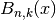.
Evaluates the incomplete Bell polynomial 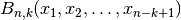, also known as the partial Bell polynomial or the Bell polynomial of the second kind. This polynomial is useful in the evaluation of (the univariate) Faa di Bruno’s formula which generalizes the chain rule to higher order derivatives.
The implementation here is based on the implementation in: sympy.functions.combinatorial.numbers.bell._bell_incomplete_poly() Following that function’s documentation, the polynomial is computed according to the recurrence formula:
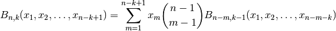
The end cases are: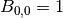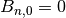 for 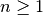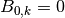 for 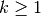Parameters : n : scalar int
The first subscript of the polynomial.
k : scalar int
The second subscript of the polynomial.
x : Array of floats, (p, n - k + 1)
p sets of n - k + 1 points to use as the arguments to 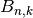. The second dimension can be longer than required, in which case the extra entries are silently ignored (this facilitates recursion without needing to subset the array x).
Returns : result : Array, (p,)
Incomplete Bell polynomial evaluated at the desired values.
- gptools.utils.generate_set_partition_strings(n)[source]¶
Generate the restricted growth strings for all of the partitions of an n-member set.
Uses Algorithm H from page 416 of volume 4A of Knuth’s The Art of Computer Programming. Returns the partitions in lexicographical order.
Parameters : n : scalar int, non-negative
Number of (unique) elements in the set to be partitioned.
Returns : partitions : list of Array
List has a number of elements equal to the n-th Bell number (i.e., the number of partitions for a set of size n). Each element has length n, the elements of which are the restricted growth strings describing the partitions of the set. The strings are returned in lexicographic order.
- gptools.utils.generate_set_partitions(set_)[source]¶
Generate all of the partitions of a set.
This is a helper function that utilizes the restricted growth strings from generate_set_partition_strings(). The partitions are returned in lexicographic order.
Parameters : set_ : Array or other Array-like, (m,)
The set to find the partitions of.
Returns : partitions : list of lists of Array
The number of elements in the outer list is equal to the number of partitions, which is the len(m)^th Bell number. Each of the inner lists corresponds to a single possible partition. The length of an inner list is therefore equal to the number of blocks. Each of the arrays in an inner list is hence a block.
- gptools.utils.unique_rows(arr)[source]¶
Returns a copy of arr with duplicate rows removed.
From Stackoverflow “Find unique rows in numpy.array.”
Parameters : arr : Array, (m, n). The array to find the unique rows of.
Returns : unique : Array, (p, n) where p <= m
The array arr with duplicate rows removed.